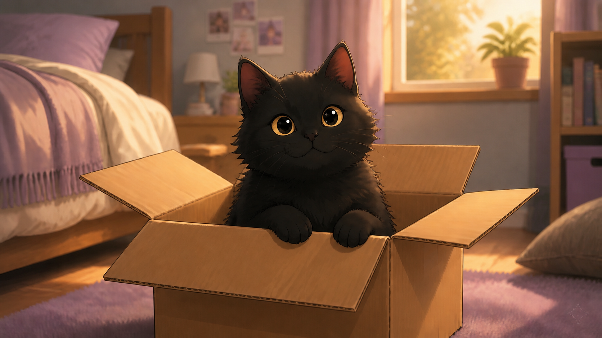

Ontem, às 16h43, meu mangá foi entregue.
Eu sei o horário porque atualizei o rastreamento tantas vezes que o site provavelmente já sabe meu nome, minha idade e que eu não tenho paciência nenhuma.
Apareceu a mensagem: entregue ao destinatário.
Eu sou a destinatária. Estava em casa. Não recebi nada.
Essa parte não foi exatamente uma surpresa. Minhas encomendas chegam a todas as casas do bairro, menos à minha. Já recebi livro da vizinha, mangá do moço da esquina e uma caixa que passou dois dias no número 71 antes de alguém perceber que eu moro no 17.
Olhei pela janela e vi um entregador no fim da rua. Ele segurava uma caixa, comparava o número do portão com o celular e parecia ter acabado de descobrir que números podem ser complicados.
Ele apontou para uma casa. Depois para outra. Girou o celular. Girou a caixa. Por algum motivo, olhou para o céu.
Não sei se encontrou o endereço. Também não sei se estava procurando o meu. Ele virou a esquina antes que eu pudesse decidir se gritava.
Meu mangá apareceu vinte minutos depois, trazido pela vizinha.
“De novo”, ela disse.
Não ficou claro se falava da entrega ou das minhas escolhas de leitura.
Quando ela foi embora, percebi que havia outra caixa diante da porta.
Uma encomenda tinha chegado à minha casa. Isso nunca acontece. Por alguns segundos, achei que o universo finalmente tivesse aprendido meu endereço.
A caixa tinha apenas meu primeiro nome na etiqueta: Sofia. Sem sobrenome. Sem remetente. Sem qualquer informação que pudesse ajudar uma pessoa normal a descobrir de onde aquilo veio. No canto, havia um carimbo quase apagado. Provavelmente da transportadora. Provavelmente.
Vírgula sentou sobre o pacote antes que eu terminasse de abrir. Talvez quisesse ajudar. Ou talvez só quisesse a caixa. Com gatos, geralmente é a caixa.

Não havia bilhete.
Também não havia nota fiscal.
Só o livro.
Procurei alguma dedicatória. Nada. Folheei as páginas. Nada. Revirei a caixa, porque aparentemente objetos misteriosos costumam esconder explicações no fundo de embalagens.
Nada.
Vírgula entrou na caixa e encerrou a investigação.
Hoje levei o mangá e o livro para a escola. O mangá porque esperar até chegar em casa seria uma demonstração de maturidade que ninguém deveria exigir de mim. O livro porque eu queria que outras pessoas confirmassem que aquilo era estranho.
Bia disse que o livro talvez fosse uma autobiografia. Caio pegou o mangá da minha mão e leu a primeira página antes de mim. Tenho relações muito saudáveis.
Expliquei que minha vida não dava um livro. Ontem eu perdi uma meia dentro do meu próprio quarto. Ninguém precisa de quatrocentas páginas sobre isso.
Encontrei meu caderno lilás enquanto procurava o mangá, que tinha sumido entre o livro e o fundo da mochila.
Ele estava aberto numa página que eu não lembrava de ter usado. No alto havia a data de ontem. A letra era minha. Até o ponto final parecia meu, porque tenho a mania irritante de apertar demais a caneta no fim das frases.
Só havia uma linha:
Li três vezes.
Não foi a primeira vez o quê?
A primeira entrega errada? A primeira mancha parecida com uma coruja? A primeira vez que escrevi uma coisa e esqueci? A primeira Sofia a receber aquele livro?
Mostrei a Bia e Caio. Caio examinou o papel e disse que a letra era minha. Bia falou que talvez eu tivesse escrito dormindo. Ela disse isso como se fosse normal.
Eu não escrevo dormindo.
Pelo menos nunca encontrei provas.
Atualização que não ajudou
Quando cheguei em casa, a página estava em branco.
A marca da caneta ainda podia ser sentida no papel.